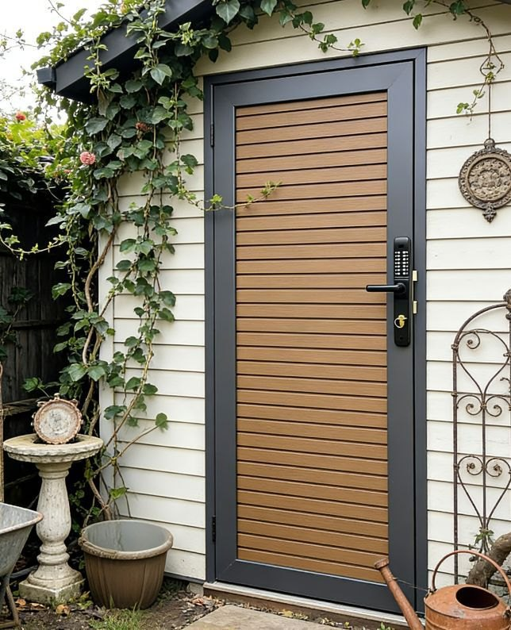

DIY Guide
How to install a WPC fence (step-by-step)
Capped WPC goes together as a clean post, rail and channel system, so a confident DIYer can install a straight run over a weekend. Here's the full method — tools, post spacing, footings, boards, gates and expansion gaps — plus where Fencly's pre-cut DIY kits save you time.
Before You Start
Tools & materials you'll need
Installing a WPC composite fence is well within reach for a hands-on homeowner. Unlike timber, there's no priming, staining or on-site sizing of pickets — the boards arrive finished and slide into channels. Before you dig a single hole, lay out everything you need so the job flows.
- Kit components: WPC posts, top and bottom rails (or U-channels), capped fence boards, post caps, gate hardware and the fixings supplied with your kit.
- Setting out: string line, timber pegs, tape measure, spirit level (or post level) and a builder's square.
- Digging & footings: post-hole shovel or auger, wheelbarrow, and rapid-set or general-purpose concrete.
- Cutting & fixing: a mitre or circular saw with a fine-tooth blade, cordless drill, rubber mallet, and safety glasses, gloves and a dust mask.
Because every Fencly board is co-extruded, ASA/PE capped WPC, the cut faces and visible faces both resist moisture — but it's still good practice to keep the capped surface uppermost and handle boards on edge to avoid scuffs. Fencly ships DIY kits Australia-wide pre-cut to your run, with fixings and instructions in the box, and offers trade pricing to landscapers and contractors with an ABN.

1. Setting out & post spacing
Accurate setting out is what separates a crisp fence from a wandering one. Run a string line along the exact boundary line, then mark each post centre. WPC panels are cut to a fixed length, so your post spacing must match the kit — commonly around 1.8m to 2.4m between post centres. Always use the spacing supplied with your kit, and check every corner is square with a builder's square or the 3-4-5 method.
Mark the post positions with pegs, then double-check the total run divides evenly. If you're finishing against a wall or existing structure, plan where the cut (short) panel will land — ideally not at the most visible end.
2. Footings & concreting the posts
Posts carry the whole fence, so the footings do the real work. As a guide, dig each hole roughly 300mm wide and 400–600mm deep for a 1.8m fence — go deeper for gate posts, windy sites and sandy soil. Drop the post in, brace it plumb in both directions, and pour a rapid-set or standard concrete mix. Dome the top of each footing so water runs off rather than pooling around the post.
Set the posts to a consistent height using your string line as a datum, and let the concrete cure before you load any weight onto the rails. Check local council and wind-region requirements if your site is exposed or unusual.
3. Fitting rails & channels
With the posts set and cured, fit the bottom rail (or channel) between each pair of posts, followed by the top rail once the boards are in. Most WPC systems use an aluminium or reinforced channel that clips or screws into the post, giving the boards a track to sit in. Keep the rails level — a spirit level on the bottom rail now saves fiddling later.
4. Sliding in the capped boards
This is the satisfying part. Slide each capped WPC board down into the channel or stack it board-on-board, working from the bottom up. A rubber mallet helps seat each board without marking the surface. Because the boards are finished on both faces, there's no painting or sealing — the fence looks complete the moment the last board drops in. Keep checking the top edge stays level as you go.
5. Expansion gaps — don't skip this
Composite board moves slightly with temperature, so leave a small expansion gap at the ends of each board where it sits in the post channel — usually a few millimetres, more on longer boards and in hot inland climates. The channel hides the gap while letting the board expand in summer and contract in winter. Skipping this is the most common DIY mistake and can cause boards to bow, so follow the gap noted in your kit instructions.
6. Hanging gates
Gates take the most abuse, so their posts should be the deepest and best-braced in the run. Fencly's single and double WPC gates are built on aluminium frames and hung to align with the fence line. Fit the hinges to the gate post, hang the gate, and adjust until the gap down the latch side is even and the gate swings cleanly without dropping. Add the drop bolt on double gates for a solid closed position.
7. Finishing & caps
Press on the post caps, clip in the top rail, and sweep the run. A quick hose-down removes install dust and the fence is done — no curing, no coats, no waiting. From here, maintenance is close to nothing: an occasional wash keeps capped WPC looking new. See our WPC fence maintenance guide for the simple routine.
Prefer it done for you?
Not everyone wants to dig footings on a Saturday. If you'd rather a crew handle it, our supply-and-install service covers Sydney, and you can compare the numbers on our WPC fencing cost guide. Either way, every board is the same co-extruded capped WPC backed by our 15-year written warranty. Browse the hub at WPC fencing Sydney or view colours to plan your run.
DIY FAQ
Installing a WPC fence — questions.
Can I install a WPC fence myself?
Yes. It's a post, rail and channel system, so a confident DIYer with basic tools can do a straight run over a weekend. The skills that matter are setting posts plumb and evenly, mixing footings, and leaving the correct expansion gaps. Fencly ships pre-cut DIY kits Australia-wide with fixings and instructions.
How far apart should the posts be?
Commonly around 1.8–2.4m between post centres, but always follow the spacing supplied with your kit because the rails and boards are cut to match it. Mark every post centre off a string line before you dig.
Why do I need expansion gaps?
Composite expands and contracts a little with temperature, so you leave a few millimetres at the board ends inside the post channel. The channel hides the gap while letting the board move, which keeps the fence flat through summer and winter.
How deep should the footings be?
As a guide, roughly 300mm wide and 400–600mm deep for a 1.8m fence, deeper for gate posts and exposed or sandy sites. Brace each post plumb, pour concrete, dome the top, and let it cure before loading the rails.
Want a kit cut to your run? Order a DIY kit or call 0421 201 613.
DIY Kits & Trade Pricing
Get your kit cut to size.
Pre-cut capped WPC kits shipped Australia-wide, with trade pricing for ABN holders. Tell us your run and we'll pack it ready to install.